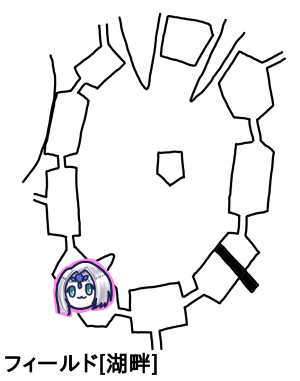

我々は前回のセッションの後始末をするために土曜夜23時に集まったのだった。
前回は湖畔南西エリアの遺跡の最深部に到着し、戦闘開始したところでした。

対ブロンズゴーレム戦です。
開始前判定から参ります。
魔物知識判定はギリギリ成功、先制も取りました。
みぞれ「これかけら入ってますか」
GM「入ってまーす」
ナナシ「どっちに何個入ってるかは」
GM「秘密でーす」
みぞれ「今回秘密なのか」
ピーター「じゃファイアーストーム撃ちます。22」
GM「右半身抵抗、左半身失敗」
ピーター「ダメージ20点です。で左半身にパラミス撃ちます」
タッシュ「エネルギージャベリンを数拡大で。20」
GM「両方届かない！」
ピーター「やさしい」
タッシュ「ダメージ16点です」
みぞれ「軽率にグレネード撃とう。17」
GM「両方抵抗しました」
みぞれ「ダメージ15点。の半分か、悲しいなあ」
ブルーローズ「尻尾生やして接敵します。異貌化…は解いてないはずだけど一応宣言しておきます。左半身に魔力撃！」
GM「尻尾魔力撃」
ブルーローズ「はい。マッスルベアスフィンクスナレッジもしとこうかな？」
GM「防護点高いもんね」
ブルーローズ「ジャイアントアームもしとこうかな？」
GM「もりもりだね、ニンニクマシマシアブラマシだね」
ブルーローズ「全盛りで命中いきます！24」
GM「11、ダメでーす」
ブルーローズ「36点ダメージ」
ピーター「ダイス目5でダメージ36点ってどういうこと」
GM「倒れました」
みぞれ「倒れたんか、かけら3つ以下入ってることしかわからんやん」
ナナシ「接敵しまして、防具壊れてるんで念の為ケンタウロスレッグ入れてレザーリボンで攻撃します」
GM「あ、防具で回避上げてたのか」
ナナシ「痛いんですよね…22」
GM「16、失敗」
ナナシ「20点、あ、通るね。2発目いきまーす、20」
GM「ブロンズ回避！18、ブロンズ失敗！」
ナナシ「なにその聖闘士星矢みたいな…21点ダメージです」
GM「じゃ敵側ね。ナナシ今回避いくつ？」
ナナシ「17」
GM「17かー、微々たる可能性にかけて狙い撃つ。23」
ナナシ「23か、ええ…24」
後衛「とりあえずチアで」
ピーター「前衛が殴ってくれれば終わる気がする」
ブルーローズ「とりあえず殴ります。スフィンクスナレッジとジャイアントアーム入れるかな…ジャイアントアームはいらないかなー、スフィンクスナレッジだけでいいか」
みぞれ「ブルーローズ、ピーターよりMP多いんだ」
「さすが神官」
ブルーローズ「26」
GM「11、はい無理でーす」
ブルーローズ「34点ダメージです」
ナナシ「魔力撃の威力アホだよな」
GM「2.0は好きなゲームだけどバランスがアホだからな」
ブルーローズ「このパーティーナナシがいる限り回避が下がるデメリットないしね。次行きまーす、25」
GM「15失敗」
ブルーローズ「もーいっかい！37点ダメージ！」
GM「ポケ戦のケンプファー並にボコボコにされました。戦闘終了です」
ピーター「剥ぎ取りしまーす、8」
GM「お、いいね！ミスリルです」
みぞれ「8からがミスリルだね、タッピーの+1が生きた」
ブルーローズ「びびびー」
ナナシ「これ探索はできますかね」
GM「できないですね」
GM「さて、君たちはドーム状の部屋の中にいましたね。部屋の中央から高さ1mぐらいの石の台座がせり上がってきます。そして台座には5つの瞳を持つ紋章が現れます」
みぞれ「いつもの。手をかざしにいきますか」
GM「ドームに文字が浮かびます」
ナナシ「なーんちゃって」
ブルーローズ「ここまでたどり着いた君たちの友情こそが真の力」
GM「文字はタッシュ先生しか読めません。魔法文明語なので」
タッシュ「それは読めなきゃ問題ありますね」
GM「タッシュ先生が嘘つきたくないのであればこのまま読みます」
メモが間に合ってませんが、イラボスが青のオルガンを奏でてエターナルが滅びる時に全都を眠らせたとかなんとか。都を眠りから目覚めさせるには青のオルガンが必要で、それは青の鍵によって封じられているとか。
GM「青色の鍵が出現しました」
「青色の鍵って中央の島で使うやつか」
GM「フライングしましたね」
ブルーローズ「鍵ゲットだぜ！…何の鍵ですか？」
GM「青色の貝でできた鍵です」
ピーター「酸の部屋通ったらやばいね」
みぞれ「ここで刻印がもらえるわけじゃないんだ」
GM「これ都じゃないからね」
みぞれ「これ洞窟だっけ、なんか勘違いしてたわ」
GM「岬の洞窟ですね」
ブルーローズ「落としたら怖いですわ！ナナシ持っておいてくださいな！」
ナナシ「お前はおっちょこちょいだからな、持っておいてやるわ」
ピーター「ライトメイス落とした人が持ってて大丈夫ですか？」
ナナシ「レザーリボン使いですが何か？」
GM「都に入るための鍵を手に入れました。ここ、青のオルガンは2つの鍵によって封じられていると書かれているんですが、ここを1つとしました。なぜなら2つ目の鍵を手に入れる場所がどこにも書いてないからです。鍵穴にも2つ使うような記述が書いてないので誤記と判断しました」
「で、これどうやって帰るんだっけ」
みぞれ「これ時間が経つと追い出される式？」
GM「追い出される式だけどちょっと待って」
ブルーローズ「だってあの武具が錆びる部屋通りたくないもん」
GM「これ出たいと思ったら出れますね」
「出ましょう」
GM「ではフィールドに戻ってきました」
ナナシ「錆びた武具はどうすればいいかわかりますか」
GM「セージ技能で判定してください」
ピーター「判定しまーす。22」
GM「ピーターは錆を落とす方法を知っています」
「ものしりうさちゃん」
GM「鍛冶屋に打ち直してもらうのが一つ、あとは自分で手入れをするという方法があります。安全な場所でやるなら自分でできます。かかる時間は1時間。泊まれるような場所であれば安全とします。泊まれるのであれば迷宮の奥底だろうと大丈夫です。必要なのはお酒です」
ブルーローズ「あ！ピーター！」
ピーター「酒の種あります！」
みぞれ「どうする？エルフ村に行くかセズウィック村に戻るか」
みぞれ「(リアルで)日付越えたけどここで切らないんですか？」
GM「1時までやる予定だよ」
みぞれ「う、1時までなんだこれ」
GM「あ、なんかあった？」
みぞれ「風呂入れないなと思って」
GM「ではお風呂に入りたいみぞれさんイベントどうぞ」
みぞれ「6、きちゃったよ…」
GM「モンスターですね。みぞれさんはお風呂に入りたくないようです」
みぞれ「諦めました」
GM「種別振ってください」
みぞれ「5。走るなぁなんでやろ」
ナナシ「このあと出目が落ちるからだよぉ」
みぞれ「やめて」
GM「牛頭の体長3mぐらいの巨大な人形生物が2体、下半身がサソリで上半身が人形の生き物です」
魔物知識判定によりミノタウロスキャスターとスコーピオンスナイパーと判明、どっちも弱点抜きました。
みぞれ「前衛キャスター？後衛職なのに？ってこいつらどっちも後衛職か」
GM「キャスター薙ぎ払いあるからね」
ナナシ「これ鷹の目あるからうさぎがまず狙撃されるよね」
ピーター「やめてー、うさちゃんなにもしてない、ただ蛮族を焼き払ってるだけ」
ブルーローズ「お前は蛮族の気持ちになって考えたことがあるのか！」
ピーター「じゃファイアーストームをキャスターに撃ちます。19」
GM「ダメでした」
ピーター「20点ダメージです」
みぞれ「じゃショットガンバレットをキャスターに。こいつ回避7だからな。19」
GM「どっちも14、ダメでした」
みぞれ「17点でーす。あとこれ魔法ダメージでーす」
タッシュ「ファイアボールをキャスターに。15」
GM「両方抵抗しました」
タッシュ「ダメージ17点です」
ブルーローズ「これキャスター2人で止めきれるよね」
ナナシ「まあ、俺はブルーローズ残して後ろ行くけどね」
ブルーローズ「あ、そか。じゃキャスターに接敵して、尻尾生やして魔力撃で殴ります。25」
GM「回避いくぜ！出目5,6だけど18なので失敗です」
ブルーローズ「32点ダメージ！」
ナナシ「じゃナナシは影走りで走り抜けます」
GM「戦闘特技だっけ」
ナナシ「戦闘特技です。スナイパー上半身に挑発攻撃をしようと思います」
GM「なるほど」
ナナシ「残りMP6かー、ケンタウロスレッグを使いまして、レザーリボン挑発攻撃でスナイパー狙います。おおー、いいねー、5,6で24」
GM「上半身は華麗にスウェーで避けてみよう。19、ダメ失敗」
ナナシ「どん！おおー3回転！41点ダメージ！」
GM「魔力撃並ですね」
ナナシ「これ欲張ったら倒せるんじゃね？ジャイアントアーム入れます。20」
GM「17、ダメでした」
ナナシ「どん！あら、21点ダメージ」
GM「生き残った！」
ナナシ「え？うそ」
みぞれ「私の計算だと残り-1なんだけど」
GM「あ、ほんとだ、死にました。上半身コア部位なのでスナイパーは倒れて終了です」
ナナシ「ナナシ一人でいけるんだ」
ブルーローズ「アサシンみたいな動きしたよね、影走りで近づいてぱーんって」
GM「じゃキャスターの攻撃です。ブルーローズだけしかいないから薙ぎ払いは旨味がないのか。それじゃみぞれとタッシュがいるエリアに向かってアシッドクラウド」
ブルーローズ「この私を無視するとはいい度胸ですわね」
GM「ゴリラは後回し」
タッシュ「マスター、この魔法って毒属性ですよね」
タッシュには毒は効きません。
GM「親切！変えるわ。じゃファイアボールでいくしかないね。18」
みぞれ「18」
タッシュ「18」
GM「あ抵抗しやがった。15点ダメージです」
ピーター「うさちゃんはチアで」
ナナシ「ピーター今HPやばくね？48/39ってなってる」
ピーター「あっほんとだ。直しておきました」
GM「さあどうする」
ナナシ「殴る、蹴る」
GM「暴行かよ」
ブルーローズ「尻尾がまだ生えてるからこれで、キャスター目の前にいるんだよね、殴る！魔力撃！21」
GM「14、ダメでした」
ブルーローズ「28点ダメージです」
みぞれ「ん、微残し(残りHP3)」
ブルーローズ「私にはツーパンチ目がある！えい！ここまで含めて私にはワンパンなのよ！25」
GM「18」
ブルーローズ「30点ダメージ！
GM「はい戦闘終了でーす。これミッション解決してるので村にワープできるよ」
というわけで村に戻ってきました。まずはミッションの解決です。
ミラベル「何匹釣れた？」
みぞれ「12匹ですね」
いつものように釣った魚の数、かかった日数等でリザルトを処理します。
今回はフィッシュボールが2つもらえました。
GM「今フィッシュボールいくつもってる？」
ナナシ「持ってないですね」
みぞれ「記録ミス？」
GM「じゃ2つだね。これを10個集めるとエターナルでしか借りられない騎獣が借りられます」
みぞれ「なんだっけ、なんとかくん」
GM「クスクスくんですね。謎掛けとかできるよ。抵抗失敗すると行動できなくなるやばいスキルとか持ってる」
みぞれ「つよい」
GM「騎獣が強化されたので防衛ポイントが3点上昇します」
タッシュ「何がなんでも防衛ポイントなんだな」
ピーター「要塞だからね」
GM「施設効果で名声値と商業値も1ポイントずつ上がるね」
ナナシ「武器の修理どうしよう」
GM「お酒人数分減らせば修理したことにしていいよ」
みぞれ「判定いらないの？」
GM「いらない。1武器につき酒1瓶必要ね。ちなみに酒の種だとジョッキ1杯ぐらいなので…3つぐらい必要かな」
GM「さて、現在の君たちですが、エターナルクリアならもうできます。完全クリアを目指すなら最大レベルまで出てくる可能性があるので、そうするならレベルを上げることを考える必要があります。なお最終ミッションは村長からの依頼になります」
ナナシ「この私と戦って倒してみるがよい」
ピーター「10レベルになったらピーターが前に出るようになるからー」
GM「横一列に並ぶのか、Gメンかお前ら」
以上、深夜における前セッションの後始末が完了しました。